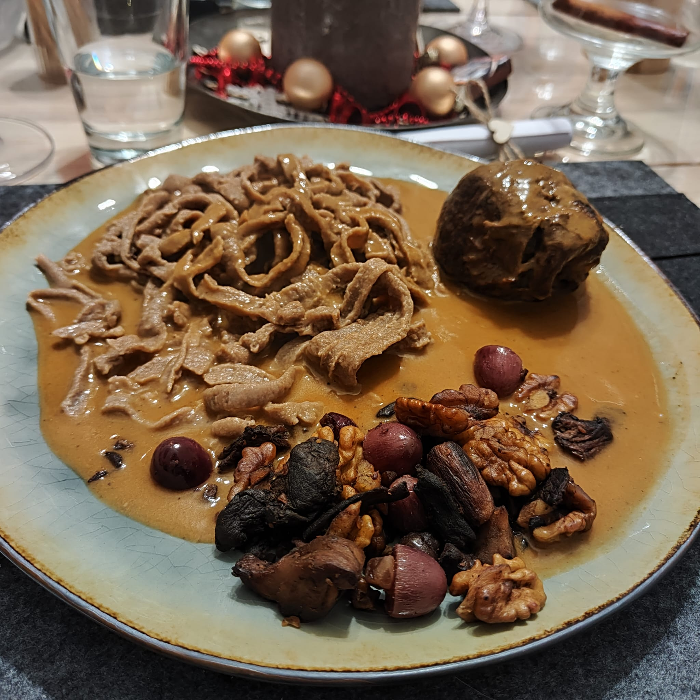

Wildrouladen mit Maronenfüllung

Wildrouladen mit Maronenfüllung
Zutaten für 4 Personen
- 800 g Hirsch- oder Rehschnitzel
- 8 blanchierte Wirsingblätter
- 200 g vorgegarte, vakuumierte Maronen
- 400 ml Wildfond
- 100 ml trockener Rotwein
- 1 TL Tomatenmark
- Mittelscharfer Senf
- 200 ml Sahne
- 2 mittelgroße Zwiebeln, gewürfelt
- 2 EL Rapsöl
- 1 TL Butter
- Puderzucker
- 200 g gemischte Pilze
- Sosenbinder
- Salz, Pfeffer
- 8 Scheiben Wildschweinschinken
Zubereitung
- Schnitzel mit Gefühl zwischen 2 Klarsichtfolien sanft klopfen, auslegen. Salzen, pfeffern und dünn mit Senf einstreichen.
- Gehackte Maronen und Pilze darüber streuen, jeweils 1 Scheibe Schinken darüber legen. Die groben Rippen der Wirsingblätter flach schneiden, darüber legen, evtl. etwas anpassen.
- Die Seiten einschlagen, damit die Röllchen vorne und hinten geschlossen sind. Aufrollen und mit Küchengarn binden oder Zahnstochern zu stecken; auch äußerlich salzen und pfeffern.
- In einem passenden Bratentopf mit heißem Rapsöl rundherum anbraten, Farbe nehmen lassen, zunächst heraus nehmen.
- Im Bratensatz die Zwiebeln anschwitzen und mit etwas Puderzucker karamellisieren, das Tomatenmark kurz mit angehen lassen.
- Mit dem Rotwein aufgießen, fast völlig reduzieren lassen. Den Wildfond dazu geben und die Rouladen einlegen, evtl. noch etwas Wasser zufügen, die Rouladen bedecken.
- Bei kleiner Hitze schmoren. Dann prüfen, das zarte Wildfleisch braucht in der Regel nicht lange, notfalls etwas nachschmoren.
- Die Rouladen aus dem Schmorfond nehmen und die Sahne einrühren, etwas auf die benötigte Menge reduzieren lassen. Nachschmecken, etwas Soßenbinder einstreuen, 2 bis 3 min. köcheln lassen, und die Röllchen wieder in die Soße geben.
Crunch
Zutaten für 4 Personen
- 200 g gemischte Pilze
- 200 g vorgegarte, vakuumierte Maronen
- 100 g Trauben, halbiert
- 100 g Walnüsse, gehackt
- Butter
- Salz, Pfeffer
Zubereitung
- Pilze, Maronen und Walnüsse in reichlich Butter bei großer Hitze anbraten. Salzen und pfeffern.
- Trauben unterschwenken und erhitzen lassen.
Walnussnudeln
Zutaten für 4 Personen
- 200 g Mehl
- 100 g Walnussmehl
- 3 Eier
- 1 EL Olivenöl
- Salz
Zubereitung
- Mehl und Walnussmehl vermischen. Mehlgemisch auf eine glatte Arbeitsfläche geben und eine Mulde bilden.
- Eier in die Mulde geben und alles zu einem geschmeidigen Teig verkneten. Wenn nötig mehr Mehl hinzugeben.
- Nudelteig im Kühlschrank einen Tag ruhen lassen.
- Nudelteig aufteilen und mit der Nudelmaschine in die gewünschte Form bringen
- Nudeln in Salzwasser wenige Minuten kochen.
Zurück zur Übersicht